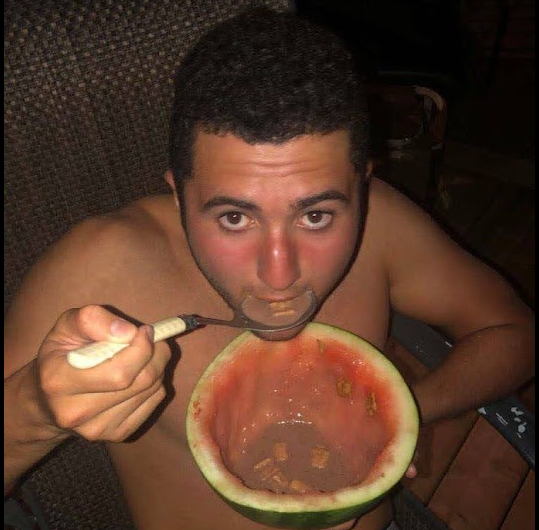
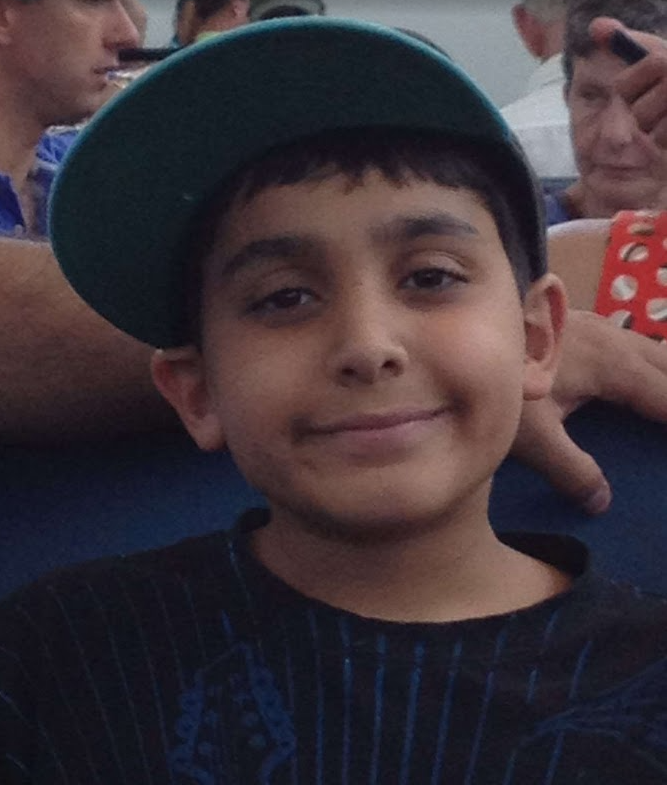
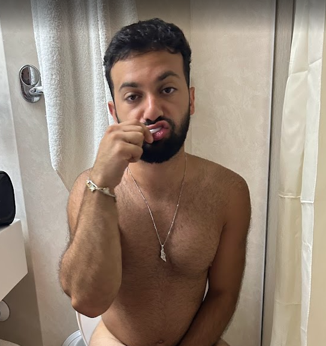

The Crew

Gab
Gabriel Derhy
Panda
Ethan Toledano

Jer
Jordan Serour

Yoni
Jonathan Todoros
Daniel
Daniel Mamane
Assayag
Eitan Assayag
🔍
No FAQs found for "".
Nicknames
Because when he was younger his uncle would buy him clothes and send it to his address with the name "Jeremiah Roscovitch".
Because in grade 3, we played this game on Facebook called Wild Ones and Panda always picked the character panda, hence, his name became Panda. He was also fat.
Lore
Because he has no morals for tutoring his best friend's younger sister.
Yes, he was really downbad. And no, he did not get enough shit.
We don't know but probably because we are jewish and our genes are fucking us. (Fuck Hamburg, he's not balding because he was adopted)
Yes, his parents didn't want him.
Membership
His sister married Yoni.
Depends on the time of year.
Depends on the time of year.
Inside Jokes
It stands for Terrified of Women Boyzies. And that's just who we are!